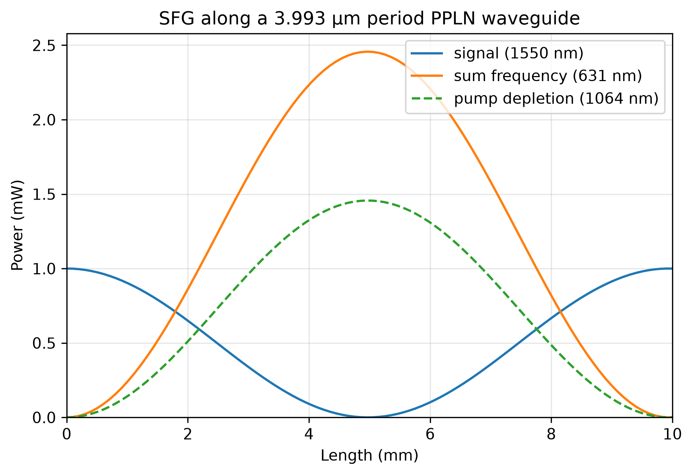
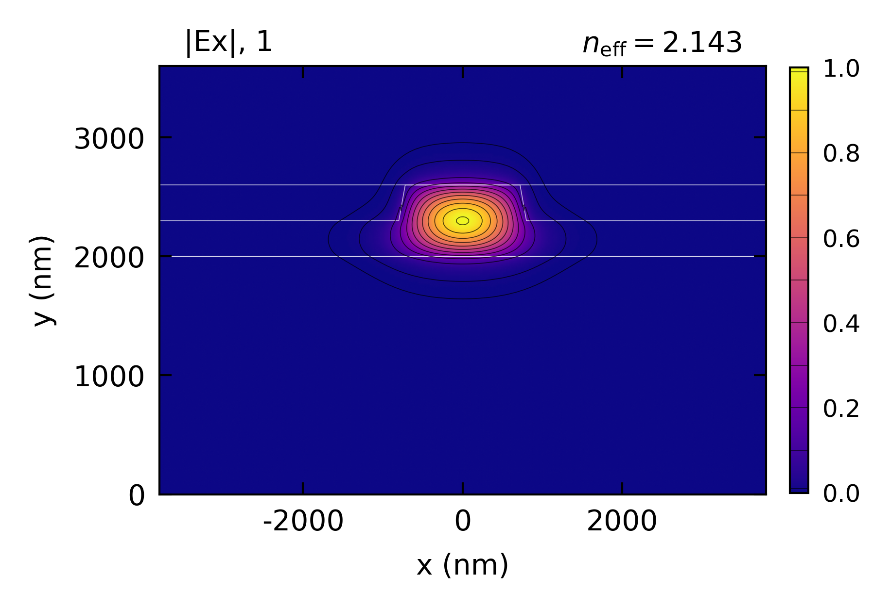

Nonlinear-EME: SFG
Sum-frequency generation in a periodically poled thin-film lithium niobate waveguide: a weak 1550 nm signal and a strong 1064 nm pump combine into 631 nm light.
Highlighted features: SFGProcess with poling_period, two simultaneous Source excitations, a three-wavelength profile set, and power_vs_z to read every wave along the section from one solve.
The ridge is the x-cut ridge of the PPLN and DFG examples, without its roughness, so the guide is lossless, and the poling period cancels the phase mismatch of the three modes. With the pump much stronger than the signal, the signal converts completely into the sum frequency at one length, then converts back as the section continues, following a sin^2 law.
Every sum-frequency photon is made from one signal photon and one pump photon, and the solve conserves both the total power and the photon numbers (the Manley-Rowe relations). Non-degenerate mixing at these shorter wavelengths is several times more efficient than the second-harmonic generation of the PPLN example.
This code example is licensed under the BSD 3-Clause License.
import sys
import emodeconnection as emc
import numpy as np
from matplotlib import pyplot as plt
## Sum-frequency generation in periodically poled thin-film lithium niobate:
## a weak 1550 nm signal and a strong 1064 nm pump combine into 631 nm light.
## With the pump much stronger than the signal, the signal is upconverted
## completely at one length and converted back beyond it. Same x-cut ridge as
## the PPLN and DFG examples, so the three waves interact through d33 as TE modes.
## Set simulation parameters
signal_wavelength = 1550.0 # [nm]
pump_wavelength = 1064.0 # [nm]
sum_wavelength = 1 / (1 / signal_wavelength + 1 / pump_wavelength) # [nm]
dx, dy = 20, 20 # [nm] resolution
w_core = 1600 # [nm] ridge top width
h_film, h_ridge = 600, 300 # [nm] LN film thickness and etch depth
h_box, h_clad = 2000, 1000 # [nm] SiO2 below and above
sidewall_angle = 15 # [deg] from vertical
length = 10e6 # [nm] 10 mm
signal_power = 1e-3 # [W]
pump_power = 100e-3 # [W]
window_width = w_core + 2 * 3000
window_height = h_box + h_film + h_clad
## theta = pi/2 puts the optic axis along simulation x: x-cut.
ln_x_cut = emc.MaterialSpec(material='LN_MgO', theta=np.pi / 2)
em = emc.EMode(emode_cmd=sys.argv[1:], simulation_name='sfg')
def build_profile(wavelength, num_modes, name):
"""One TE profile of the poled ridge at a given wavelength."""
em.settings(
wavelength=wavelength,
x_resolution=dx,
y_resolution=dy,
window_width=window_width,
window_height=window_height,
num_modes=num_modes,
boundary_condition='TE',
background_material='SiO2',
generate_chi2=True,
)
em.shape(name='BOX', material='SiO2', height=h_box)
em.shape(
name='LN',
material=ln_x_cut,
fill_material='SiO2',
height=h_film,
mask=w_core,
etch_depth=h_ridge,
sidewall_angle=sidewall_angle,
)
em.shape(name='clad', material='SiO2', height=h_clad)
## label_profile() meshes but does not solve, and the poling period needs n_eff.
em.FDM()
em.label_profile(name=name)
build_profile(signal_wavelength, 1, 'signal')
build_profile(pump_wavelength, 2, 'pump')
build_profile(sum_wavelength, 3, 'sum')
## create_profile_set() consumes its profiles, so keep a copy to plot at the end.
em.label_profile(name='sum_mode')
def fundamental_te(profile):
"""Index and effective index of the highest-index genuinely TE mode.
Eigenvalue order is not polarization order: at 631 nm a TM mode sits at
index 0 even under a TE boundary condition.
"""
n_eff = np.real(np.asarray(em.get('effective_index', profile=profile)))
te = np.asarray(em.get('TE_fraction', profile=profile))
index = next(i for i in range(len(n_eff)) if te[i] > 0.5)
return index, n_eff[index]
## Read the profiles before create_profile_set() consumes them.
i_signal, n_signal = fundamental_te('signal')
i_pump, n_pump = fundamental_te('pump')
i_sum, n_sum = fundamental_te('sum')
for label, wl, i, n in (
('signal', signal_wavelength, i_signal, n_signal),
('pump ', pump_wavelength, i_pump, n_pump),
('sum ', sum_wavelength, i_sum, n_sum),
):
print(f'{label} {wl:8.2f} nm: mode {i}, n_eff {n:.5f}')
em.create_profile_set(profiles=['signal', 'pump', 'sum'], profile_set_name='wg')
## Quasi-phase matching cancels the mismatch Delta_beta = beta_sum - beta_signal
## - beta_pump with a poling period Lambda = 2*pi/Delta_beta.
poling_period = 1 / (n_sum / sum_wavelength - n_signal / signal_wavelength
- n_pump / pump_wavelength) # [nm]
print(f'poling period: {poling_period * 1e-3:.4f} um')
process = emc.SFGProcess(
pump_wavelength_1=signal_wavelength,
pump_wavelength_2=pump_wavelength,
poling_period=poling_period,
)
em.straight_section(name='sfg_section', profile='wg', length=length, nonlinear=process)
em.settings(excitation=[
emc.Source(port='left', wavelength=signal_wavelength, power=signal_power, mode=i_signal),
emc.Source(port='left', wavelength=pump_wavelength, power=pump_power, mode=i_pump),
])
em.EME()
r = em.get('response')
## One solve gives the whole length dependence: power_vs_z reads back the
## trajectory the coupled-amplitude solver integrated along the section.
z_nm, p_signal = r.power_vs_z(signal_wavelength)
_, p_pump = r.power_vs_z(pump_wavelength)
_, p_sum = r.power_vs_z(sum_wavelength)
## Complete upconversion turns every signal photon into a sum-frequency photon,
## each carrying signal_wavelength/sum_wavelength times the energy.
k = int(np.argmax(p_sum))
print(f'peak sum-frequency power: {p_sum[k] * 1e3:.4f} mW at {z_nm[k] * 1e-6:.3f} mm')
print(f'photon-limited maximum: {signal_power * signal_wavelength / sum_wavelength * 1e3:.4f} mW')
print(f'signal left at the peak: {p_signal[k] / signal_power * 100:.3f} %')
print(f'sum-frequency out at {length * 1e-6:.0f} mm: {r.power("right", sum_wavelength) * 1e3:.4f} mW')
## The waveguide is lossless, so the three waves together carry the input power
## at every z, and every sum-frequency photon takes one photon from each input.
## Photon flux goes as P*lambda.
total_in = signal_power + pump_power
balance = np.max(np.abs(p_signal + p_pump + p_sum - total_in)) / total_in
print(f'largest power imbalance along z: {balance:.1e}')
created = p_sum[k] * sum_wavelength
print(f'Manley-Rowe (signal photons lost / sum photons created): '
f'{(signal_power - p_signal[k]) * signal_wavelength / created:.5f}')
print(f'Manley-Rowe (pump photons lost / sum photons created): '
f'{(pump_power - p_pump[k]) * pump_wavelength / created:.5f}')
## With the pump undepleted, coupled-mode theory gives
## P_sum = (signal_wavelength/sum_wavelength) P_signal sin^2(g z), complete at
## g L_c = pi/2. Its small-signal limit P_sum = eta P_signal P_pump z^2 defines
## the normalized efficiency eta = (signal_wavelength/sum_wavelength) g^2 / P_pump.
g = np.pi / (2 * z_nm[k] * 1e-7) # [1/cm]
eta = signal_wavelength / sum_wavelength * g ** 2 / pump_power # [1/(W cm^2)]
print(f'normalized efficiency: {eta * 100:.0f} %/W/cm^2')
undepleted = signal_power * signal_wavelength / sum_wavelength * np.sin(g * z_nm * 1e-7) ** 2
print(f'largest departure from the undepleted-pump law: '
f'{np.max(np.abs(p_sum - undepleted)) / p_sum[k] * 100:.2f} % of the peak')
fig, ax = plt.subplots(figsize=(6.5, 4.5))
ax.plot(z_nm * 1e-6, p_signal * 1e3, label=f'signal ({signal_wavelength:.0f} nm)')
ax.plot(z_nm * 1e-6, p_sum * 1e3, label=f'sum frequency ({sum_wavelength:.0f} nm)')
ax.plot(z_nm * 1e-6, (pump_power - p_pump) * 1e3, ls='--',
label=f'pump depletion ({pump_wavelength:.0f} nm)')
ax.set_xlabel('Length (mm)')
ax.set_ylabel('Power (mW)')
ax.set_title(f'SFG along a {poling_period * 1e-3:.3f} μm period PPLN waveguide')
ax.legend()
ax.grid(True, alpha=0.3)
ax.margins(x=0)
ax.set_ylim(bottom=0)
fig.tight_layout()
fig.savefig('sfg_vs_length.png', dpi=300, bbox_inches='tight')
## The sum-frequency mode. Mode i_sum, not mode 0, for the reason above. The
## same index is declared for sfg_sum_Ex in figures.toml.
em.plot(component='Ex', plot_function='abs', profile='sum_mode', mode=i_sum)
## Close EMode
em.close()
Console output:
EMode3D 1.0.7 - email
Meshing completed in 0.2 sec
Solving modes completed in 1.5 sec
Meshing completed in 0.1 sec
Solving modes completed in 1.5 sec
Meshing completed in 0.0 sec
Solving modes completed in 1.6 sec
signal 1550.00 nm: mode 0, n_eff 1.92258
pump 1064.00 nm: mode 0, n_eff 2.02803
sum 630.91 nm: mode 1, n_eff 2.14312
poling period: 3.9928 um
Solving S-matrices...
Solving section: sfg_section... completed in 0.6 sec
completed in 0.8 sec
peak sum-frequency power: 2.4567 mW at 4.949 mm
photon-limited maximum: 2.4568 mW
signal left at the peak: 0.005 %
sum-frequency out at 10 mm: 0.0008 mW
largest power imbalance along z: 5.3e-10
Manley-Rowe (signal photons lost / sum photons created): 1.00000
Manley-Rowe (pump photons lost / sum photons created): 1.00000
normalized efficiency: 24745 %/W/cm^2
largest departure from the undepleted-pump law: 1.22 % of the peak
Exited EMode
Figures:

